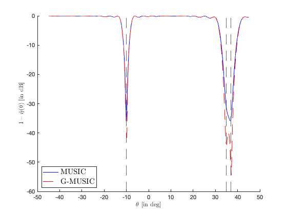

Section 3.1.3: Subspace methods: the G-MUSIC algorithm
This page contains simulations in Section 3.1.3.
Contents
Basic settings
close all; clear; clc p = 30; n = 150; c = p/n; theta_true = [-10, 35, 37]./180*pi; k = length(theta_true); sigma2 = .1; P = eye(k); a = @(theta) exp(-pi*1i*sin(theta)*(0:p-1)')/sqrt(p); % here d=pi A = [a(theta_true(1)), a(theta_true(2)), a(theta_true(3))]; theta_range = linspace(-45,45,300)./180*pi; store_output = zeros(length(theta_range),2); % [MUSIC, G-MUSIC] rng(991); S = sqrtm(P)*randn(k,n); W = complex(randn(p,n), randn(p,n)); X = A*S + sqrt(sigma2/2)*W;
MUSIC versus G-MUSIC
SCM = X*(X')/n; [U,eigs_SCM] = eig(SCM,'vector'); [eigs_SCM, index] = sort(eigs_SCM,'descend'); U = U(:, index); U_S = U(:,1:k); for j = 1:length(theta_range) theta = theta_range(j); %MUSIC store_output(j,1) = mag2db(real(1 - a(theta)'*U_S*(U_S')*a(theta))); %G-MUSIC with different estimators for sigma2 sigma2_estim = eigs_SCM(k+1)/(1+sqrt(c))^2; %sigma2_estim = mean(eigs_SCM(k+1:end)); %sigma2_estim = sigma2; tmp = 0; D = zeros(k,k); for l = 1:k lambda = eigs_SCM(l)/sigma2_estim; if lambda>=(1+sqrt(c))^2 ell_estim = (lambda-(1+c))/2 + sqrt( (lambda-(1+c))^2 - 4*c)/2; D(l,l) = (ell_estim^2+c*ell_estim)/(ell_estim^2-c); end end store_output(j,2) = mag2db(real((1 - a(theta)'*U_S*D*(U_S')*a(theta)))); end figure hold on plot(theta_range*180/pi,store_output(:,1),'b'); plot(theta_range*180/pi,store_output(:,2),'r--'); xline(-10,'--'); xline(35,'--'); xline(37,'--'); legend('MUSIC', 'G-MUSIC', 'Location','southwest', 'FontSize',15, 'Interpreter', 'latex') xlabel('$\theta$ [in deg]', 'Interpreter', 'latex') ylabel('$1-\hat \eta(\theta)$ [in dB]', 'Interpreter', 'latex')